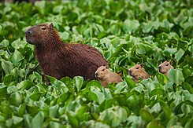
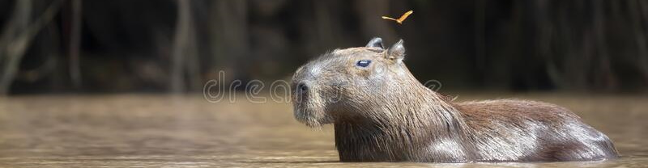
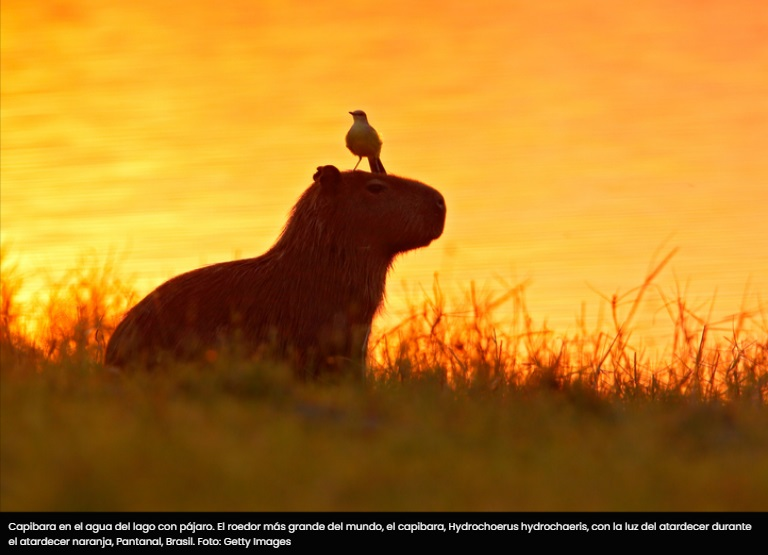

Capibaras
El carpincho, capibara o chigüiro es una especie de roedor de la familia de los cávidos. Es el roedor viviente de mayor tamaño y peso del mundo. Vive en la zona terrestre de los bosques y sabanas tropicales y templadas del centro y norte de Sudamérica hasta casi los 2000 m.s.n.m. Wikipedia
Así es el capibara, el animal más amistoso del mundo que sirve de transporte para otras especies en el Amazonas
Cocodrilos, tortugas, patos, distintos tipos de monos y pájaros figuran entre los amigos cercanos de los capibaras: los roedores más amigables del reino animal.
"Un capibara común puede llegar a pesar 90 kilos. Con un gesto serio —casi estoico— y los cuatro dedos pesados que tiene en cada una de sus patas, podría pasar por ser un roedor feroz que vive en perfecta soledad, disfrutando de los lodazales en los bosques húmedos de América Latina. La naturaleza cuenta otra historia." (Continuar Leyendo)
1 Hora de capibaras en Termas